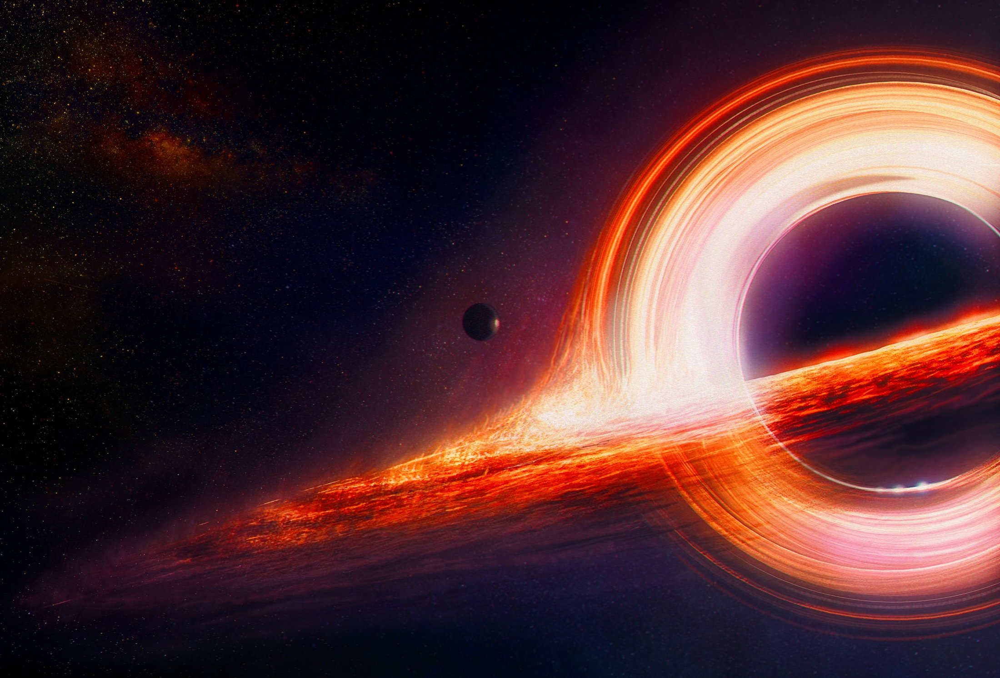

Visual of a black hole:

Interesting facts:
- Black holes can slow down time
- They aren't actually cosmic vacuum cleaners
- You can't see a black hole directly
- Black holes can spin incredibly fast
- Black holes can evaporate over time
- A black hole's "point of no return" is called the event horizon
Types of Black Holes
- Stellar Black Holes: Formed when massive stars collapse after running out of fuel.
- Intermediate Black Holes: Larger than stellar black holes but smaller than supermassive ones.
- Supermassive Black Holes: Found at the centers of most galaxies, including the Milky Way.
- Primordial Black Holes: Hypothetical black holes that may have formed shortly after the Big Bang.